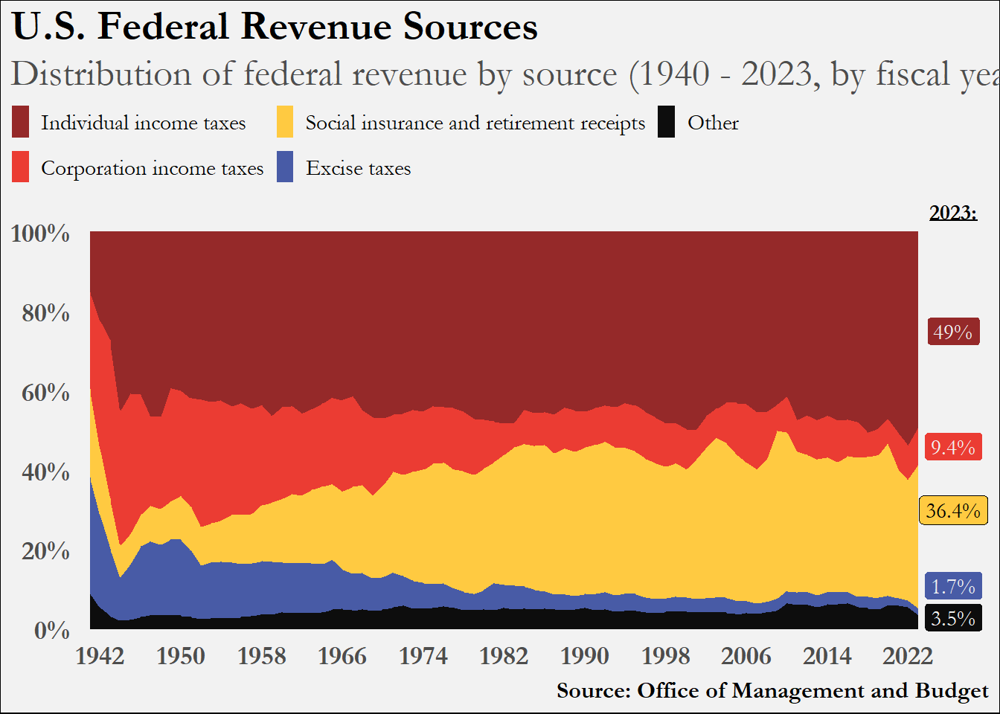

Code
library(tidyverse)
library(janitor)
library(extrafont)
file <- read_csv("data/hist02z1_fy2025(Table).csv")
pal <- c("#952929", "#eb3c33", "#ffca41", "#485ba6", "#0d0d0d")
mat <- file[-c(1, 3, 95:103), -c(5, 6, 9:11)]I encountered this Reddit post about a year ago and felt compelled to reproduce it. The plot below is what this blog post is going to reproduce.
This is the first of a two-part series on this data set and plot. In the next post I’ll show how to add animation to the plot.
There are a few aspects of this plot that I really like, and I can learn from this plot how to deploy these visualization tactics in future situations:
Legend arrangement
Call-out of 2023 values (2024 has been published as well so theoretically this plot could use an update)
Color scheme
In the year 2025 it is such a pleasure to work with the U.S. Government when it comes to data matters; just don’t report bad numbers!
Here is where you can find historical budget tables. Clicking on the workbook, we want the data in the tab titled “hist02z1”.
This table has got a bunch of (what I like to call) Excel formatting bullshit that we’re going to have to untangle.
This first chunk of code loads in the libraries needed to plot, reads in our file of data, creates the color palette for the plot. Additionally, it extracts the specific rows and columns in the matrix that we need for our plot.
library(tidyverse)
library(janitor)
library(extrafont)
file <- read_csv("data/hist02z1_fy2025(Table).csv")
pal <- c("#952929", "#eb3c33", "#ffca41", "#485ba6", "#0d0d0d")
mat <- file[-c(1, 3, 95:103), -c(5, 6, 9:11)]The following chunk processes the matrix into a data frame suitable for the type of plot we are to achieve.
df <-
mat |>
row_to_names(1) |>
clean_names() |>
mutate(
across(
everything(),
~ . |>
str_remove(",") |>
str_remove(",") |>
as.numeric())
) |>
pivot_longer(
2:6,
names_to = "revenue_type",
values_to = "millions"
)
fin <-
df |>
filter(fiscal_year > 1940) |>
mutate(
type = case_match(
revenue_type,
"other_3" ~ "Other",
"excise_taxes_2" ~ "Excise taxes",
"social_insurance_and_retirement_receipts_2" ~ "Social insurance and retirement receipts",
"corporation_income_taxes_1" ~ "Corporation income taxes",
"individual_income_taxes" ~ "Individual income taxes")
) |>
mutate(
type = factor(
type,
levels = c("Individual income taxes",
"Corporation income taxes",
"Social insurance and retirement receipts",
"Excise taxes",
"Other")))Now that we have an ideal data frame, we can plot.
fin |>
ggplot(
aes(x = fiscal_year,
y = millions,
fill = type)) +
geom_area(position = "fill") +
scale_x_continuous(
breaks = seq(1942, 2022, 8),
expand = c(0, 0),
limits = c(1940, 2030)
) +
scale_y_continuous(
labels = scales::percent,
breaks = seq(0, 1, .2),
expand = c(.015, 0)
) +
scale_fill_manual(values = pal) +
labs(
title = "U.S. Federal Revenue Sources",
subtitle = "Distribution of federal revenue by source (1940 - 2023, by fiscal year)",
caption = "Source: Office of Management and Budget") +
annotate("label",
x = 2026.5,
y = c(.75, .46, .11, .03, .3),
label = c("49%", "9.4%", "1.7%", "3.5%", "36.4%"),
family = "Garamond",
size = 4,
fill = c(pal[1], pal[2], pal[4], pal[5], pal[3]),
color = c(rep("grey95", 4), "black")) +
annotate("text",
x = 2026.5,
y = 1.05,
label = expression(underline( bold("2023:"))),
family = "Garamond",
size = 4) +
guides(fill = guide_legend(nrow = 2)) +
theme_minimal() +
theme(legend.position = "top",
axis.title = element_blank(),
axis.text = element_text(face = "bold",
family = "Garamond",
size = 14),
legend.title = element_blank(),
legend.text = element_text(family = "Garamond",
size = 11.2),
legend.key.width = unit(.35, "cm"),
axis.ticks = element_blank(),
panel.grid = element_blank(),
plot.title = element_text(face = "bold",
family = "Garamond",
size = 21),
plot.title.position = "plot",
legend.margin = margin(0, 0, 0, 0), # turned off for alignment
legend.justification.top = "left",
legend.location = "plot",
plot.subtitle = element_text( family = "Garamond",
size = 19,
color = "grey30"),
plot.background = element_rect(fill = "grey95"),
plot.caption = element_text(face = "bold",
family = "Garamond",
size = 12)) 
I made the decision to color each of the 2023 value labels the same color as their associated area color to make it easier to read. I also did not get the legend ordering to match